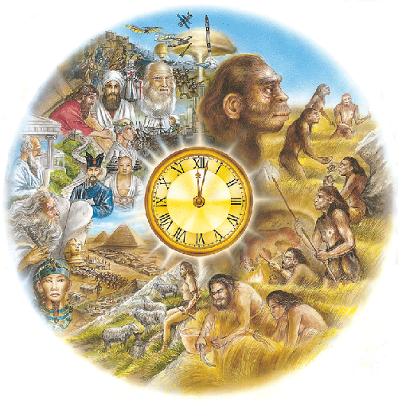
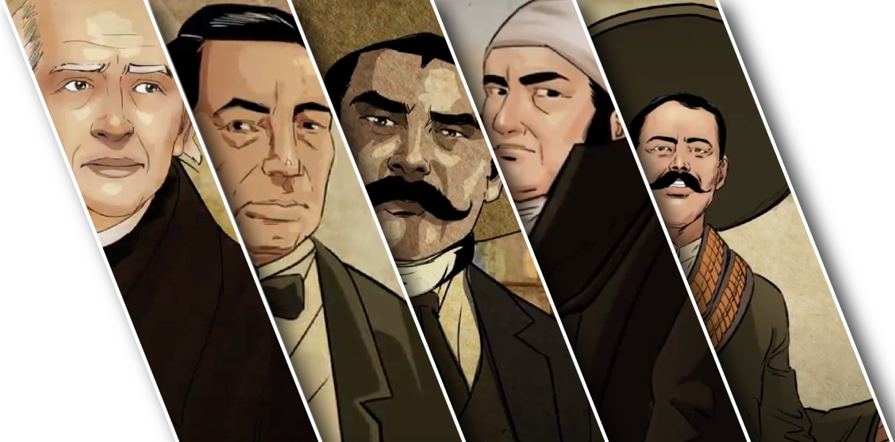
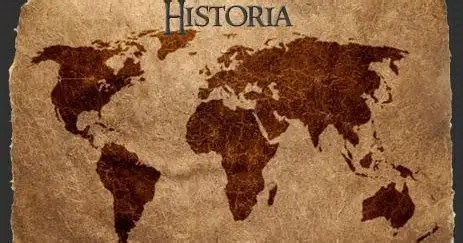

La conciencia histórica es la capacidad que tenemos para conocer, analizar y comprender los acontecimientos del pasado. Nos permite entender cómo las decisiones y acontecimientos de otras épocas han influido en la sociedad actual.
Estudiar historia no solamente significa aprender fechas y nombres. También significa comprender las causas de los acontecimientos, sus consecuencias y la manera en que han cambiado nuestra sociedad.
Gracias a la conciencia histórica podemos reflexionar sobre las experiencias de las generaciones anteriores, reconocer los problemas que enfrentaron y valorar los avances que hoy disfrutamos. De esta manera, aprendemos a interpretar el presente y a tomar decisiones responsables para el futuro.
La historia también nos ayuda a reconocer que las sociedades cambian con el tiempo. Las costumbres, las leyes, la educación, la tecnología y las formas de gobierno se transforman como resultado de diferentes procesos históricos.
La historia es importante porque nos ayuda a comprender de dónde venimos y cómo hemos llegado hasta el presente. Conocer nuestro pasado fortalece nuestra identidad y nos permite valorar las tradiciones, las culturas y las experiencias de distintas sociedades.
Algunas razones para estudiar historia son:
Por ejemplo, conocer la Independencia de México nos permite entender cómo surgió nuestro país como nación independiente. Estudiar la Revolución Mexicana nos ayuda a conocer las demandas sociales y políticas que impulsaron importantes transformaciones.
Para facilitar su estudio, la historia suele dividirse en diferentes etapas. Cada una se caracteriza por transformaciones importantes en la organización de las sociedades.
| Acontecimiento | Año | Descripción | Importancia |
|---|---|---|---|
| Independencia de México | 1810 | Comenzó el movimiento encabezado inicialmente por Miguel Hidalgo. | Inició la lucha para terminar con el dominio español. |
| Consumación de la Independencia | 1821 | Se consumó la separación política de España. | Marcó el nacimiento de México como nación independiente. |
| Constitución de 1824 | 1824 | Se estableció una república federal. | Organizó las bases del gobierno mexicano. |
| Reforma liberal | 1855-1861 | Se impulsaron transformaciones políticas y legales. | Contribuyó a cambiar la relación entre la Iglesia y el Estado. |
| Constitución de 1857 | 1857 | Se promulgó una constitución de orientación liberal. | Reconoció derechos y estableció principios políticos liberales. |
| Revolución Mexicana | 1910 | Comenzó un movimiento contra el régimen de Porfirio Díaz. | Impulsó cambios políticos y demandas sociales. |
| Constitución Mexicana | 1917 | Se promulgó una nueva Constitución. | Incorporó derechos sociales y continúa vigente con reformas. |
| Derecho al voto de las mujeres | 1953 | Se reconoció el derecho de las mujeres a votar y ser elegidas en elecciones federales. | Representó un avance fundamental en la participación política. |
Estos acontecimientos muestran que la historia de México es el resultado de diferentes luchas, acuerdos y transformaciones. Su estudio permite comprender la formación de las instituciones y los derechos que forman parte de la vida actual.
A lo largo de la historia de México, distintas personas participaron en movimientos políticos, sociales y culturales. Sus acciones influyeron en los acontecimientos de su época.

| Año | Suceso histórico |
|---|---|
| 1810 | Inicio de la Independencia de México. |
| 1821 | Consumación de la Independencia. |
| 1824 | Promulgación de la Constitución federal. |
| 1857 | Promulgación de la Constitución liberal. |
| 1862 | Batalla de Puebla, el 5 de mayo. |
| 1910 | Inicio de la Revolución Mexicana. |
| 1917 | Promulgación de la Constitución vigente, con reformas posteriores. |
| 1953 | Reconocimiento del voto femenino en elecciones federales. |

La cultura mexicana es resultado de la convivencia y transformación de numerosos pueblos a lo largo del tiempo. Los pueblos originarios, el periodo virreinal, los movimientos de independencia y los cambios modernos han contribuido a formar las costumbres y tradiciones que conocemos actualmente.
Las lenguas indígenas, la gastronomía, la música, las danzas, las celebraciones y las artes son parte importante de nuestra identidad. Conocer su historia nos permite valorar la diversidad cultural y reconocer las aportaciones de distintas comunidades.
Las tradiciones también cambian con el tiempo. Algunas conservan prácticas antiguas, mientras que otras incorporan nuevas ideas y formas de expresión. Por eso, estudiar la historia de la cultura nos ayuda a entender cómo las sociedades conservan y transforman sus costumbres.
Para estudiar el pasado, los historiadores utilizan fuentes históricas que aportan información sobre las personas y las sociedades de otras épocas.
Es importante comparar distintas fuentes, investigar quién las produjo y analizar el contexto en el que surgieron. De esta forma, podemos comprender mejor los acontecimientos y distinguir entre información comprobada, opiniones e interpretaciones.
Consulta las siguientes páginas para aprender más sobre la historia de México, sus acontecimientos y su patrimonio cultural.
Instituto Nacional de Estudios Históricos de las Revoluciones de MéxicoLa conciencia histórica es fundamental para comprender nuestra identidad, reconocer los cambios que ha experimentado la sociedad y valorar las experiencias de quienes vivieron antes que nosotros. El pasado nos ofrece conocimientos que podemos utilizar para reflexionar sobre los problemas actuales y participar de manera responsable en nuestra comunidad.
Conocer la historia no significa solamente recordar fechas. Significa investigar, analizar, hacer preguntas y comprender que los acontecimientos tienen causas y consecuencias. Al estudiar nuestro pasado, podemos valorar la diversidad cultural, aprender de diferentes experiencias y contribuir a construir un futuro mejor.